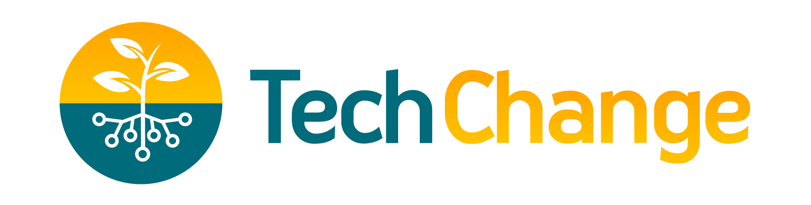
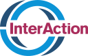

See useful tools in action
Watch facilitators work through relevant civic and democracy examples from our sector, drawing on experience from hundreds of AI and technology trainings.
The Democracy+AI Accelerator · Fall 2026 cohort
Used responsibly, AI tools can help.
The Democracy+AI Accelerator is a six-week live cohort for non-technical, everyday democracy and civil society professionals who want to learn where AI can—and cannot—support their work.
Real results by participants of our programs:
Our learning approach
This practical, cohort-based experience is designed to move you from curiosity to confident use—without losing sight of AI safety, context, or human judgment.
Designed for people who are new to AI: you’ve heard about it, maybe tried it once or twice, and want to learn to use it well.
Watch facilitators work through relevant civic and democracy examples from our sector, drawing on experience from hundreds of AI and technology trainings.
Try techniques during guided exercises, then adapt them to a real task, question, or workflow from your own work in optional Practice Sprints between sessions.
Compare approaches with civic peers, ask honest questions, and keep experimenting through coaching and community support.
Progress from prompting and verification to practical automation while keeping privacy, bias, oversight, and your mission in view.
Full program schedule
Live online Thursdays, 2:00–3:30 PM Eastern.
Instruction is in English. Participants outside the Americas are welcome if the timing works.
Timing or language don't work for you? Get notified for future cohortsLearn to prompt, verify outputs, and set practical guardrails.
Iterate and draft messages for different audiences.
Use AI to synthesize information, find patterns, and test hypotheses.
Map a recurring task and design an AI-assisted workflow with human review.
Tell the community a specific experiment you'll try with AI.
Beyond the five sessions
The live sessions anchor the program. Coaching, practice, resources, and community help you turn those sessions into sustained progress.
90 minutes each, with demonstrations, guided practice, discussion, and time for your questions.
Ask questions, exchange resources, and learn with peers.
Opportunities to bring a specific challenge or experiment to a facilitator.
Short, optional exercises between sessions that help you apply what you learn.
Tools, examples, practical guides, and responsible AI resources you can return to.
Hear perspectives that stretch your thinking and bring your questions to the final session.
Reconnect, share what you put into practice, and learn from the next wave of experiments.
Stay connected to people, events, ideas, and opportunities beyond the cohort.
Your facilitators
Deep expertise in democracy, civic, and information sectors, and proven, responsible AI and technology education. Adam and Samhir previously co-taught a course on technology design for low-resource contexts at Georgetown University’s School of Foreign Service.
Chief Democracy Officer, New Democracy Studio
Adam brings more than 20 years of experience in democracy support, international development, technology training, and human-centered program design. He is a certified AI trainer for OpenAI Academy, and previously taught a course on tech design for low-resource environments at Georgetown's School of Foreign Service.
More about AdamCEO, Dev Design
As CEO of Dev Design, a digital literacy studio, Samhir brings 15 years of experience designing memorable learning experiences that help people understand, evaluate, and safely use digital tools to advance their mission. He built OpenAI Academy's trainer certification curriculum and has taught data and AI literacy at Georgetown University's graduate school since 2017.
More about Dev DesignTrusted by


Evidence from practice
Adam & Samhir have combined decades of experience facilitating impact-focused technology and organizational training for civil society and non-profits. Their approach is hands-on, and focused on building the confidence and judgement to be able to pick up AI tools immediately and use them to power your work safely and responsibly.
Excellent training with an outstanding facilitator who brings deep expertise, patience, and humor. I learned a tremendous amount, and I’m already putting that knowledge to meaningful, consistent use in my day-to-day work.
Finding foundation, bilateral, and other non-U.S. government funding required serial manual searches that could consume two working days—time urgently needed for strategy and relationship-building.
The participant used enterprise-approved AI tools with voice and chat to refine the research approach, then batch-researched donor profiles using live web sources and approved internal documents.
They identified 27 opportunities totaling $33M in under two hours. Donor research fell from roughly 1.5 days to under 45 minutes, returning time to prioritization, relationships, and delivery.
Research, content planning, and scheduling were spread across tools and required repetitive manual work. The team wanted to protect its voice while reducing creative fatigue and administrative effort.
The participant created dedicated AI assistants for content and research, then connected a Google Sheets content calendar with Google Calendar and Canva AI. The full process was documented in one shared system for team members to replicate.
The new workflow saved an estimated four to six hours of manual input each week and made it possible to plan and schedule a month of content in one day.
Analyzing reef-health data and preparing a report took about eight hours for each protected area. With 108 sites and plans to expand to 200, the team needed a more scalable process.
The participant used enterprise-approved AI tools to analyze Excel datasets, generate structured one-page reports, and create visuals. Outputs from different tools were compared with the source data and with human assessments.
Analysis and reporting time fell by 75%, while report structure and clarity improved. Staff could redirect time towards planning better interventions.
Recurring board-liaison and operations tasks relied on cumbersome manual processes, including preparing board meeting minutes.
The participant used Copilot and Grammarly to create a reusable template that streamlined how board minutes were prepared.
The workflow reduced the manual work required for board operations and compressed a process that took a couple of days into a couple of hours.
Results are drawn from participant work in previous facilitator-led AI learning programs. Details have been shortened or anonymized.
Keep the momentum
The accelerator is part of Democracy+AI, New Democracy Studio’s suite of practical AI offerings for civic professionals and institutions.
Here’s how that helps you connect and learn long after the Accelerator concludes.
Use the WhatsApp group to share a quick experiment, ask a question, or pass along a useful opportunity. Participation is optional; the emphasis is on useful, manageable exchange.
Connect with the New Democracy Studio community, with opportunities to share your work and support each other’s democratic voices.
Join a planned alumni summit in spring 2027. Reconnect with peers, compare experiments, and explore what to try next.
Receive discounted access to future advanced New Democracy Studio accelerators as new opportunities open.
Apply now
5 live sessions November 5–December 10, 2026 (skipping Thanksgiving week)
Seats are limited. Applications are reviewed on a rolling basis; applicants accepted will be notified as places remain available. Applying is free and doesn't guarantee a seat. Participants should be people whose work strengthens democracy, who have high interest but limited experience using AI in their own work, and can make the timing work as described above.
The Democracy+AI Accelerator
Full program value$1,295
Early bird pricing
$495
Price after October 16: $645
Includes five live sessions, coaching opportunities, practice sprints, the resource hub, cohort community, certificate, and alumni summit.
Apply nowTakes about 5-10 minutes. No payment required.
Future opportunities
Tell us what would work for you. We will share relevant future cohorts, Salons, and opportunities from the Studio.
A few practical questions
Our program is designed for enthusiasts and skeptics alike. Wherever you stand on that spectrum, curiosity, openness to experimentation, and a willingness to explore the edges of what AI can and can’t do — in a safe, friendly environment — are what set successful participants apart.
Typical profiles of successful participants include civic and nonprofit professionals, including executive directors, program managers and officers, communicators, researchers, fundraisers, and journalists. They might feel that they are only scratching the surface of what AI can do for them, or that they want to better understand its risks before deciding how to use it. Others might not use it at all and feel worried they’re falling behind.
This experience is designed for people with no coding or technical background. The brief Application form will help us assess whether you are too advanced for the content.
A useful analogy: Imagine it’s 100 years ago, and cars are beginning to hit the production line — bringing with them concerns about job displacement, noise and environmental pollution, corporate conglomeration, and safety.
This accelerator is driver’s ed in the early days of cars: It’s for people who want to learn to drive the car effectively in a safe, friendly environment — discussing guardrails, exploring how the engines work, and taking turns behind the wheel — even if the roads are still bumpy and unpaved.
If that describes you, consider applying. But if you’re not comfortable getting behind the wheel right now, we totally understand. This program might not be a good fit right now.
Live sessions are highly acclaimed, interactive, virtual workshop experiences. In each session, your facilitators — who are certified trainers by leading AI providers like the OpenAI Academy — will lead you through short explanations, live demonstrations, guided experimentation, and discussion.
These are highly participatory sessions, and the final session of this accelerator will feature presentations by participants. More details will be shared during the program.
Between the 90-minute live sessions and optional practice sprints (homework) and coaching, plan for about two hours per week — more if you spend more time with the material and community.
As you evaluate your availability, remember that for those celebrating holidays in late November, there's no session the week of November 23, 2026.
Join from a quiet place with reliable Wi-Fi and a computer with a working microphone and speakers or headphones. Live sessions take place on Google Meet, so you will need an up-to-date web browser that supports that free videoconference software. We will share the meeting link and any preparation guidance before the cohort begins.
Participants are encouraged to join with multiple screens — to follow the live session on one screen, and practice in AI tools on the other — but that is not required.
There will be opportunities for participants to sign up for short 1:1 coaching with one of your facilitators. Bring a specific challenge, an experiment, or a question. Booking details will be shared with the cohort.
These coaching sessions are consistently among the highest rated components of our program. Although they’re optional, they are a great opportunity to connect with your instructor to have a tailored conversation about your own AI questions, workflows, or strategy.
You can follow the demonstrations and participate in discussions without any paid accounts, but some features may need the lowest paid-tier consumer subscription to AI tools, or enterprise AI tool access. You’ll share more details about your tool access in the application, so we can help assess fit.
No one will be required to pay for a tool or create an account they are not comfortable using.
No. The accelerator is tool-agnostic. Your facilitators have deep experience teaching major LLM tools, including ChatGPT, Claude, Gemini, and Microsoft Copilot, and they focus on transferable skills you can use across platforms: prompting, verification, responsible use, workflows, and everyday tips and tricks.
The particular tools featured in your sessions are selected by your facilitators based on a variety of factors — including last-minute decisions based on how much usage quota remains in their own accounts! In many cases, you’ll be able to replicate your facilitators’ demonstrations in your preferred tool, even if the experience looks a little different.
Responsible use is part of the learning throughout. We will discuss verification, bias, privacy, organizational policies, and when human judgment must lead.
You’ll often be invited to share your work, including sharing your screen if you are comfortable. When sharing any work, use public, sample, or appropriately anonymized material for exercises, and follow your organization’s rules.
There is no formal capstone project. Optional Practice Sprints help you try something useful between sessions. In our final session, you’ll share a specific, achievable idea to tackle after the program. Your facilitators will share more details later. It’s simple, low-stakes, and no slides are required.
This cohort is open to participants representing organizations or joining independently. The application will ask you to share the organization you’re representing, if any.
To receive your certificate, show up as your authentic, curious self to all five 90-minute sessions, and complete a final program survey.
Join the future-cohort interest list and tell us your time zone and preferred language. Spanish-language cohorts are planned for the future, let us know if you are interested. We will also share upcoming Salons and other opportunities. This cohort is taught in English.
We review applications for fit and available places on a rolling basis. If accepted, you will receive enrollment information and a secure payment link. Applying does not involve payment or guarantee a place. You’ll be registered once we receive that information and the payment.
The last payment deadline is October 30, 2026. Please review the Accelerator Terms, including payment and cancellation details, before enrolling.